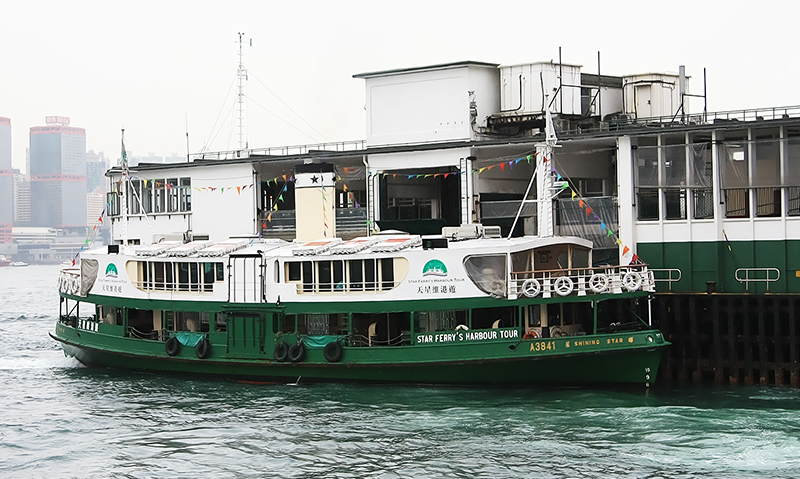
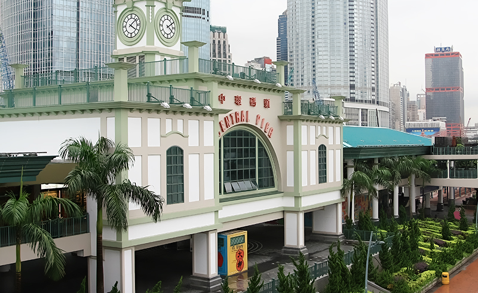
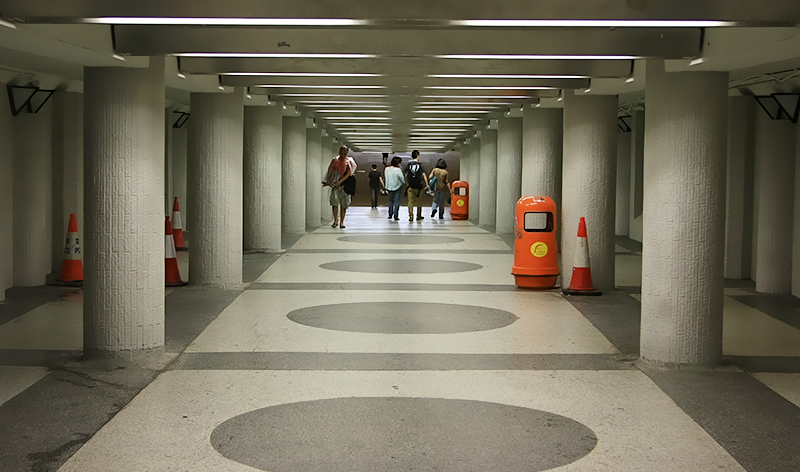

和叮叮车的瘦长不同，天星小轮有点胖胖的。前几天去方所看到天星小轮的纪念品出售，才知道最早的天星小轮诞生于19世纪末，已经有一个半世纪的历史。这一个半世纪以来，早年的天星小轮还是瘦长型的，后来好像就有了越来越胖的趋势，不过不管它的外观形状如何改变，它的颜色一直是一半白一半墨绿，码头的颜色也是非常统一的白色和绿色。也因为如此，靠近小轮和码头的地方，海水都特别绿。

中环天星码头一共有10个码头，去往不同的地方，中间有一座维多利亚式风格的钟楼，每隔15分钟鸣响一次，据说是仿照1912年的中环码头建造的。越过钟楼往中环的方向看，在无数摩天大楼的背景下，这座钟楼显得很迷你。

去往中环天星码头的地下通道，很多电影在这里取景，比如《江湖》《殺破狼》和《鐵三角》